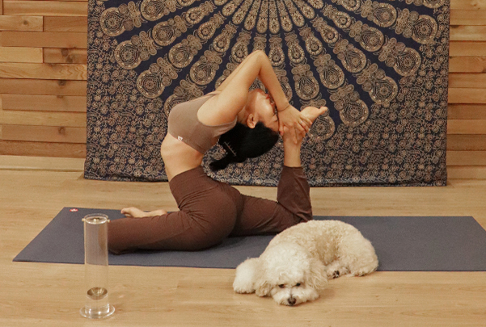

AWAKEN THE ANCIENT INSTINCT
태고의 본능을 깨우다

단순한 경험을 넘어 사용자에게 최적화된 공간을 제안하는
공간 디자인 컴퍼니 하늘아이디.
이 곳의 기획자와 디자이너가 만나 탄생한 라이프스타일 브랜드 퍼미리움은
때로는 건축적으로 때로는 공예적으로 사고하며
새로운 개념의 사물을 만듭니다.
퍼미리움의 첫 번째 아이템을 지금 만나보세요.

AWAKEN THE ANCIENT INSTINCT
태고의 본능을 깨우다
감각의 향유와 감성의 확장
우리는 본디 섬세하고 순수한 오감에 의지하며 살아있는 기쁨을 향유해왔습니다.
나무로부터 유래한 인센스에 담긴 자연의 냄새와 재가 타들어가는 소리 그리고 중력에 의해 연기가
위에서 아래로 흐르는 모습. 퍼미리움이 보여주는 감각적인 현상에 잠시 집중해보세요.
태곳적부터 전해 온 오감이 면밀히 깨어나고 멎어 있던 감성이 다시 피어납니다.
휴식에 대해 고찰하다
INCENSE RITUAL FOR RELAXATION
고대부터 향은 치유 그리고 정화와 밀접한 관계를 맺어왔습니다.
퍼미리움은 감성의 확장과 함께 휴식으로의 몰입을 선사합니다.
이를 통해 우리는 몸과 마음을 치유하고 상황을 넓게 보는 시각을 갖출 수 있죠.
인센스를 피우며 몸과 마음을 존중하는 의식은 우리 자신으로 하여금 오늘보다 나은 내일을 준비하게 해줍니다.
장인정신으로 빚어낸 건축적 구조
FUMIRIUM IS CRAFTMANSHIP
퍼미리움 인센스 퍼포머는 크래프트맨쉽 기반으로 제작됩니다.
사용자 경험에 대한 충분한 고민이 담긴 건축적인 구조 설계와 디자인은
사용자로 하여금 직관적이면서도 손쉬운 사용을 가능하게 하죠.
숙련된 장인이 수작업으로 만드는 퍼미리움의 가치는 오래 지속됩니다.
GLASS ARTISAN
련된 글라스 아티장이 섬세한 블로잉 기법으로
공들여 만드는 유리 연무관은
최상급 독일제 붕규산 유리로 제작되어 내열성과 내구성이 뛰어납니다.
PURE BRASS
도금을 하지 않은 순수 황동을 사용하여
견고한 인상과 묵직한 무게감을 지닌 퍼미리움 인센스 퍼포머는
시간의 흐름에 따라 자연스럽게 에이징되는 멋을 보여줍니다.
인센스의 기원에 접근하다
BACKFLOW INCENSE FROM WOOD
순수한 물과 식용 가능한 약재로 만드는 퍼미리움 인센스는 국내에서 유일하게 자체 연구, 개발된 백플로우 인센스 콘입니다.
퍼미리움에서 첫 번째로 선보이는 우디 콜렉션은
인센스의 기원이자 토대가 되는 재료인 우드(WOOD)에 본질적으로 접근한 시리즈입니다.
백단과 설송, 침향 총 3가지 나무로부터 받은 영감을 재해석하여 향에 담아냈습니다.
STORY
1
정연주 (FUMIRUM 크리에이티브 디렉터)
공간디자인 컴퍼니 하늘아이디에서 퍼미리움의 제품 기획과 개발을 담당합니다.
삶과 사물을 다양한 각도로 해석하는 라이프스타일을 콘텐츠를 만들고 있습니다.
여유를 갖는 연습
요즘 같은 불안정한 사회적 흐름 속에서는 여유를 갖는 연습이 필요해요. 특히 코로나로 인한 시공간적 제약을 받고 있는 현 시점에서는 그 필요성이 더욱 커졌죠. 저희는 후각을 통한 위안과 힐링에 주목했고 그 결과 퍼미리움이 탄생하게 되었어요.
퍼미리움이 추구하는 가치
퍼미리움은 후각적 매개체를 필두로 사용자의 시공간과 라이프스타일에 의미를 부여하는 콘텐츠를 개발하는 브랜드에요. 유영하는 인센스의 연무를 멍하니 바라보며 차분한 향기를 통해 자신만의 차원으로 넘나들게 되는데 그것이 바로 퍼미리움이 추구하는 가치입니다.
후각 영역의 잠재성
모든 감각을 통틀어 후각 영역의 가치와 잠재성을 높이 평가해요. 후각이 갖는 ‘시공간에 대한 소환능력’ 때문이죠. 후각적 자극은 개인으로 하여금 경험과 오감의 기억을 떠올리게 하고 나아가 경험하지 않은 가상의 상황을 상상하게 합니다.
감성과 여유를 선사하는 퍼미리움
후각 콘텐츠는 아직까지 디지털로 대체할 수 없는 아날로그의 영역이에요. 디지털 시장에서의 시청각 영역은 특정 색, 형, 인상, 소리에 대한 전달하고자 하는 바를 얼마나 정확하고 디테일하게 표현하는가가 관건이라면 후각영역은 특정 향기의 정확한 구현보다는 ‘부여된 의미와 전달방법’이 더 중요한, 감성적 영역이기 때문이죠. 퍼미리움은 사용자가 감성적 체험과 여유에 더욱 몰두할 수 있도록 앞으로도 다양한 제품을 개발할 생각이에요.
2
백종환 (공간 디자이너, WGNB 대표
공간디자인 컴퍼니 하늘아이디에서 퍼미리움의 제품 기획과 개발을 담당합니다.
삶과 사물을 다양한 각도로 해석하는 라이프스타일을 콘텐츠를 만들고 있습니다.
근래의 일상과 하루
최근 건축 프로젝트와 해외 프로젝트가 많이 늘어났어요. 그래서 자연스럽게 보여드릴 수 있는 공간들의 스펙트럼을 넓히기 위해 정성을 다하며 바쁜 하루를 보내고 있어요.
정말 나를 위한 시간, 좋아하는 향과 함께
매일 자신을 위해 20분 정도의 시간은 그림 그리는 데 보내요. 주로 수채화를 그리는데 갖가지 색이 물에 자연스럽게 번지는 걸 보면 그 순간은 아무 생각이 나지 않아 너무 좋아요. 이 시간은 정말 나를 위한 시간이기에 좋아하는 향을 피우기도 하고, 향수을 뿌리기도 하고, 음악을 듣기도 하죠. 아침에는 카페라떼를, 밤이면 위스키 한 잔과 함께 이 시간을 즐겨요.
기억을 남기는 향기
저에게 향기란 '기억'이에요. 향기와 함께 머물렀던 장소와 함께한 사람 그리고 시간을 기억해요. 해외에 나갈 때도 공항에서 새로운 향수를 구매하고, 외국에 있을 땐 의식처럼 그 나라에서 샀던 향수를 뿌리며 제가 있는 곳을 인식하며 하루를 보내죠. 그러면 그 향수가 저에게 그 나라를 후각으로 인지시켜주는 지표가 돼요.
후각 요소를 시각적으로 음미하다
인센스는 기본적으로 후각에 다채로운 유희를 제공하죠. 퍼미리움 인센스 퍼포머는 후각 요소를 시각적으로도 음미할 수 있다는 점이 감각적으로 다가왔어요. 이런 점이 처음에는 새롭고 낯설기도 했는데 어느샌가부터 자연스럽고 편안하게 느껴졌어요. 연기가 중력에 의해 유유자적 아래로 흐르는 모습이 만물의 자연스러운 섭리와 같기 때문 아닐까요?
3
지승주 (요기니, 스와라 요가 대표)
서울 송파구에서 스와라 요가원을 운영하며 하타요가를 수련하고 있습니다.
남의 것이 아닌 내 것을, 내 소리를 낼 수 있는 수련자가 되고자 합니다.

생각을 비워내는 습관
평소 하타요가 수련과 수업 그리고 사랑하는 반려견과 산책을 하며 하루를 보내요. 바쁜 하루 중, 식물에 물을 주며 주위를 가볍게 정리하는 행위를 통해 생각을 비워내는 습관을 가지고 있어요. 생각이 끊이지 않는 일상에 잠시 쉼을 주는 거죠.
마음속 깊은 곳까지 차분하게
식물과 함께 보내는 휴식 시간에는 인센스를 태워요. 인센스의 은은한 향으로 마음속 깊은 곳까지 차분하게 정리하죠. 심신을 이완하는 느낌을 주는 점이 좋아 캔들보다 인센스를 애용하고 있습니다.
명상으로 유도하는 아름다운 연무
인센스 버너로써 처음 접하는 퍼미리움의 디자인과 소재가 너무 신선했어요. 인센스의 연기가 모래시계나 물방울이 떨어지는듯한 아름다움에 한동안 눈을 뗄 수 없었죠. 연무를 바라보는 동안 어느새 명상의 상태로 자연스럽게 유도되는 느낌을 받아 놀라웠습니다. 평소 집중력이 떨어진다고 느끼시는 분들에게도 좋은 도움이 될 것 같아요.
수련의 여정을 이끄는 우디 향
요가인으로서 인센스를 사용할 때 향의 강도를 가장 중요하게 생각해요. 퍼미리움의 백플로우 인센스는 향이 강하거나 인위적이지 않아서 수련할 때 호흡을 방해하지 않아요. 나무 재료 특유의 순수한 우디한 향이 수련의 여정을 이끌어주어 매우 만족스러워요.